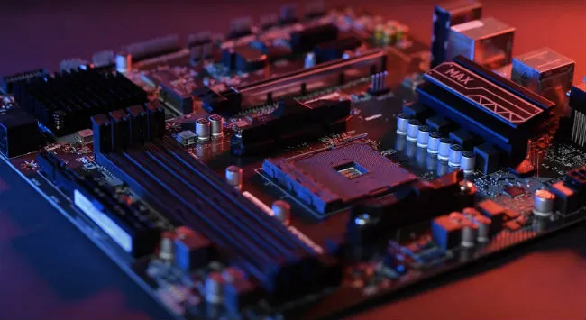

The Process of Building a Computer
The process of building a computer is actually fairly simple, and there are many guides online showing the steps in detail. The one that I used the first time I built a computer, and my personal favorite, is the POV guide from Linus Tech Tips:
- The first step is to take out the motherboard, and place it on an anti-static workplace, such as the bag it came in, or the box.
- Next, lift up the lever and insert the CPU, making sure to properly align it with the socket, then lower the lever until it latches.
- Most coolers included with CPUs already have thermal paste on them, but third party coolers do not. If the cooler does not already have thermal paste, apply it.
- Insert the RAM sticks into the DIMMs on the motherboard, align the notch in the contacts with the peg in the slot. Apply firm pressure.
- If an M.2 SSD is present, insert it and screw it in.
- Insert the rear I/O shield, bend the fins back, the insert and screw in the motherboard.
- Insert any other drives, and screw them in.
- Insert any PCIE expansion cards.
- Insert and Secure power supply.
- Connect all power, data, fan, and cooling cables.
- You're done!